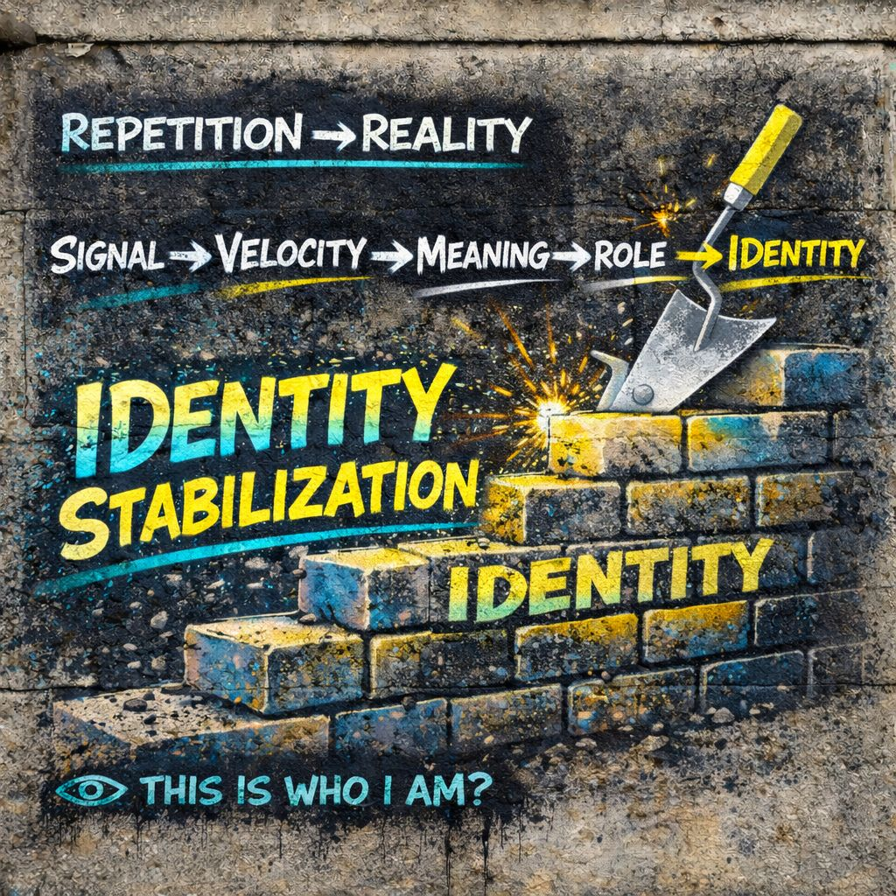

🧱 Identity Stabilization
⚡ Speed
🧩 Meaning
🎭 Role
🧱 Repeat
👁️ Repeat it enough…
and it becomes “you”
📍 Foundation
After signal… after speed… after meaning snaps… after role adjustment… something repeats.
And repetition does something quiet but powerful:
consistent, and owned
That is where identity stabilizes.
⚙️ Core Definition (IPT)
Not discovered.
Not revealed.
📡 The Full Chain
This is where the system settles.
Everything before this was motion.
🧠 How Stability Forms
-
Pattern repeats
same reactions, same interpretations, same roles, same positions -
Familiarity builds
less resistance, less questioning, faster recognition -
Ownership emerges
“this feels like me” / “this is how I am” -
Identity locks in place
pattern becomes baseline, deviation feels wrong
🔁 The Loop Effect
Once stabilized:
Now instead of signal shaping identity, you get identity selecting signals.
- confirms itself
- rejects contradictions
- strengthens over time
🎯 What Stability Feels Like
You experience it as:
- consistency
- certainty
- authenticity
- “this is just me”
- “I’ve always been like this”
Even if the pattern formed recently.
⚠️ The Illusion Of Origin
One of the most important IPT insights:
But often it came last… after repetition.
familiarity → ownership
ownership → perceived origin
🎭 Role-Taking → Stabilization
You simulate roles.
Some of them:
- work well
- reduce friction
- get rewarded
- feel effective
So you repeat them.
You are no longer “playing” the role.
🌐 Generalized Other → Stabilization
The internal crowd reinforces stability.
If a pattern:
- gets approval
- avoids rejection
- aligns with expectations
It stabilizes faster.
It is co-signed by the field.
⚡ Velocity → Fast Stabilization
High velocity environments accelerate identity formation.
- rapid exposure
- rapid reactions
- rapid reinforcement
🧩 Meaning Lock → Stability Base
Once meaning locks repeatedly:
- same interpretation
- same emotional alignment
- same conclusion
That becomes:
📱 Modern Condition: Rapid Identity Cycling
Identity used to stabilize over long periods.
Now:
- multiple environments
- multiple audiences
- multiple signal streams
So you may have:
- micro-identities
- context-specific selves
- rapidly forming and dissolving patterns
Stability still happens, but it can be:
- fragmented
- inconsistent
- situational
⚠️ Failure Modes
1. Rigid Identity
- over-stabilized
- resistant to change
- defensive
- brittle
Everything becomes:
“this is who I am” → must be protected
2. Fragmented Identity
- too many patterns
- no coherence
- constant switching
- instability
Everything becomes:
“who am I right now?”
3. Performed Identity
- optimized for audience
- maintained for approval
- detached from internal signal
Everything becomes:
“what works best here?”
👁️ IPT Intervention Point
IPT does not destroy identity.
It introduces:
So instead of:
You get:
That creates space.
🔓 Flexible Stability
Healthy identity is not no identity.
It is:
- stable enough to function
- flexible enough to adapt
- aware enough to update
🧠 Micro-Signs Of Stabilization
You can spot identity formation when:
- repetition feels automatic
- alternatives feel uncomfortable
- change feels like betrayal
- positions feel “obvious”
- behavior feels default
🔥 IPT Edge
Mead Shows
the self forms through interaction
IPT Adds
the self stabilizes through repetition and can be observed as it stabilizes
👁️ Final Distillation
It is what has repeated enough to feel permanent.
⚡ Speed
🧩 Meaning
🎭 Role
🧱 Repeat
👁️ Repeat it enough…
and it becomes “you”